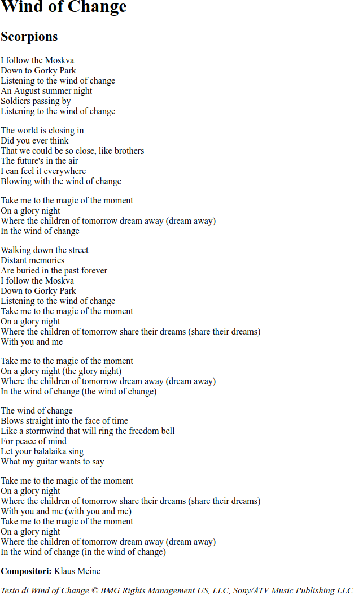
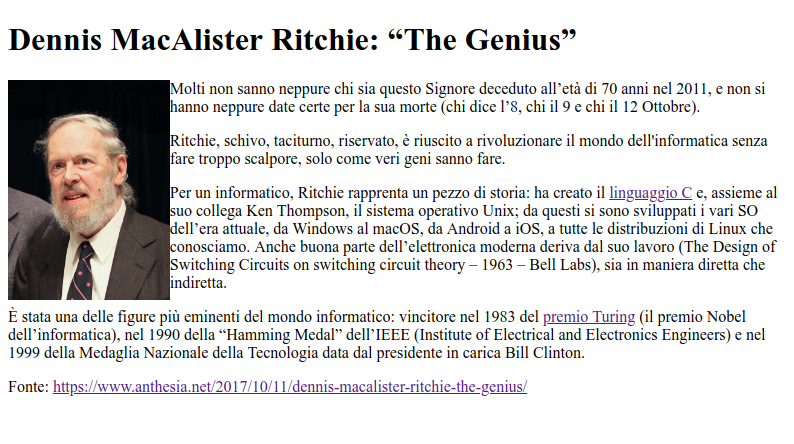
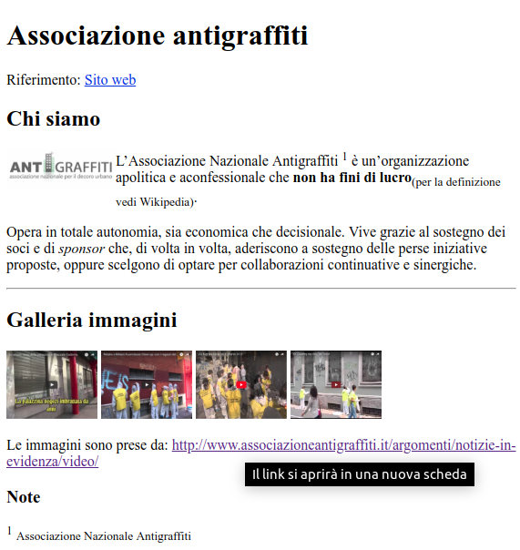

Appunti di laboratorio - elenco completo Contatto maurizio.boscaini@unitn.it
NOTA: questi appunti sono da intendersi solo come aiuto allo studio e alla preparazione all'esame.
La programmazione è difficile...ma è anche bella, utile e importante.
Si può imparare a programmare solo programmando.
Riferimento
Argomenti svolti nella Lezione
styleIl tag <body> (e soltanto lui) prevede l'attributo bgcolor come alternativa alla definizione del colore di sfondo tramite l'attributo style e la proprietà background-color.
I numeri rappresentano delle quantità.
I sistemi di rappresentazione dei numeri si dividono in:
Nei sistemi non posizionali il valore di un simbolo è sempre lo stesso, ovvero non dipende dalla posizione che ha nella rappresentazione. Es. in romano il simbolo V vale sempre cinque sia nel numero VI sia nel numero IV.
Nei sistemi posizionali il valore di un simbolo all'interno della rappresentazione del numero dipende:
3 ha valore tre nel numero 13, mentre ha valore trenta nel numero 37.commenti , html, head, title, meta, body, p, h1, h2, br, strong, em
Crea la pagina HTML wind_of_change.html come quella riportata sotto col testo di Wind of change degli Scorpions.
Pagina base:
<!DOCTYPE html>
<!--
@author: maurizio.boscaini@gmail.com
@version: 1.0 2018-02-18
-->
<html>
<head>
<title></title>
<meta charset="UTF-8">
</head>
<body>
</body>
</html>

Elementi HTML da applicare (oltre a quelli già visti in esercizi precedenti):
a, img
Crea la pagina HTML `dmr.html' come quella riportata sotto su Dennis MacAlister Ritchie.
I link si riferiscono a pagine di Wikipedia.

Elementi HTML da applicare (oltre a quelli già visti in esercizi precedenti):
small, b, i, sup, sub, hr
Crea la pagina HTML `associazioneantigraffiti.html' come quella riportata sotto sull'Associazione antigraffiti.
Cliccando sulle immagini si aprono le immagini nella dimensione originale, mentre l'ultimo link utilizza l'attributo: target="_blank"
Le immagini vanno salvate nella sottodirectory: images/associazioneantigraffiti/
